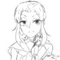
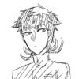

雑多夢主健忘禄
花京院×オリ主*千葉 琴音(チバ コトネ)
女主。原作介入者。
原作知ってる転生者がスタクルメンバーとして参加するよくあるトリップ系の夢主。7人目ではない。
キャラクターとして花京院が大好きで、彼を救う為に行動する。花京院の言うことは？ゼッターイ！そんな子。スタンドは防御能力系。しかしその防御能力は自分を守れない。
実際ンドゥール戦では花京院を庇い一生残る怪我をしたし、DIO戦では腹パン死する彼の身代わりとなり腹に穴があく。また、アブドゥルとイギーの救出にも成功し、彼女は自分を犠牲に仲間を救ったと言っても過言ではない。
しかし転生世界線のスターダストクルセイダーズは原作世界線の過去しか保有しておらず、誰1人彼女を覚えてはいない。彼女は現在大学生。
ポルナレフ×オリ主*混上 晴(コンジョウ ハル)
女主。アーニャの姉で、スタンド無し。現在記憶なし。
ディアボロに再起不能にされた際、手当てをしてくれた小さな村の娘。
ポルナレフがまた戦いに出るとなった時、ついて行くわ！と言って聞かなかったので了承され、しかし手紙と共に置き去りにされた。
手紙には「必ず帰って来る。帰って来たら、１つ話を聞いてくれ」と書いてあった。村娘はその言葉を信じ待ち続け、そして世界は一巡した。
彼が伝えたかった事はただ１つ、命の恩人に向けた求婚の台詞だった。
今世では彼女は記憶を持たない。それを覚えているのは、あんな無責任な置き手紙を渡して約束を果たせなかったことにひどく後悔しているポルナレフただ一人。彼女が記憶を思い出すかどうかは話の展開による。
 アブドゥル×オリ主*大石 菜絵(オオイシ ナエ)
女主。スタンドあり。記憶あり転生。
幼い頃親の転勤でエジプトに暮らしており、その際出会った幼いアブドゥルと友人だった。
お互いスタンドが見える者として親友関係を築いていたが、ある日前世の記憶が戻り親友がモハメド・アブドゥルであると気づき、恐怖から距離を置いた。しかし距離を置くには遅過ぎてDIOの襲撃を受け、助けを求める前に攫われる。
彼女は自分の命が大事であったが、それ以上にやはり親友が大事だった。自分が肉の芽でも埋め込まれ敵対することがあれば、彼はきっと躊躇する。
彼女はDIOを前にして、自分のスタンドを使い自殺した。
スタンドの能力は形は違えど同じ炎系だとなお親友関係が深まりそう。
転生軸では、記憶なんてないだろうとたかを括り生放送されてる様な占いイベントに足を運ぶが、元気な姿を一目見ようとする前にアブドゥルに気づかれ熱い抱擁を受け、伝説の放送事故を起こした。
形兆+男主*菅原 凛太郎(スガワラ リンタロウ)
スタンドあり、記憶あり。
スタンドの矢に射られそうになり、スタンドで躱したのが出会い。スタンド能力を探ろうとした形兆に「君、射るなら射ると言いたまえよ」と言い放ち唖然とさせた。
前世の記憶ありでスタンド持ちで転生したのもあり厨二病を拗らせている。学校は違ったが「悲惨な過去を抱えた哀しき悪役」を気に入った男主が一方的に押しかけ関係を築いた。喋り方が古臭い。
彼はスタンドは知っていたが原作を知っていたわけではなかった。形兆と仲が良いと言う理由で音石に襲われた際捕まってしまい、矢の保管場所などを聞かれるが「私は友を売る奴には生り下がらん！」と言い放ちあっけなく死んだ。
転生軸では無事厨二病は治ったが、同学年に音石も形兆もいる為死ぬほど茶化される。3人で仲良く平和な学生ライフを築いてくれ。
 岸辺露伴+男主*沖合 航太(オキアイ コウタ)
スタンドあり、記憶あり、転生後原作覚醒。
岸辺露伴の幼馴染として生まれ、杉本鈴美の件で精神を病んだ露伴の記憶を封じた。
特に売れてるわけではないがかと行って貧乏暮らしをしているわけでもないと言ったごくごく平凡な詩書き。露伴の自称親友を名乗っていた。自覚のある重度の放浪癖。
原作時は杜王町にはおらず、帰ってきた際ちょっとしたいざこざがあり憂さ晴らしにと１人で赴いたイタリアで事件に巻き込まれ死亡した。
転生後は親戚として生まれ、前世のトラウマか過保護になった露伴の提案により(強制的に)露伴邸に住むことになった。
しばらくはギクシャクした関係を築くだろうが、おそらく一年しないうちに鈴美お姉ちゃんの手腕で和解する。和解したらきっと２人仲良く取材旅行に行くのだろう。和睦。